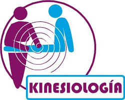
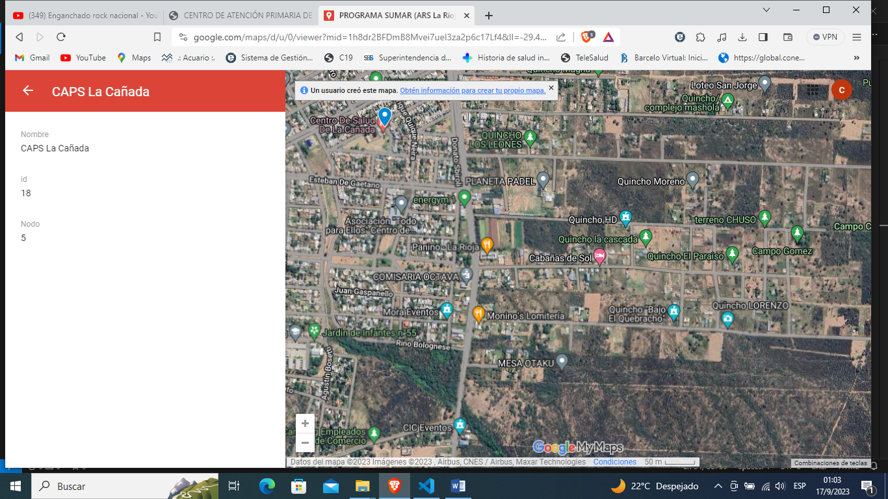
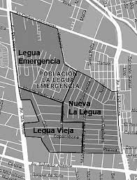

Atiende los dias:
Lunes a Viernes 9 a 12hs

Atiende los dias:
Lunes 9 a 12hs
Miercoles 9 a 16hs
Consultar por disponibilidad de turnos porque pueden cambiar
Atiende los dias:
Martes 12 a 19hs
Jueves 12 a 19hs
Atiende los dias:
Lunes a Viernes 9 a 12hs
Atiende los dias:
Lunes a Viernes 14 a 19hs
Atiende los dias:
Lunes a Viernes 9 a 12hs
Atiende los dias:
Lunes a Viernes 8 a 12hs
Asesorar, brindando información acerca de cuidados esenciales de atención primaria de la salud como ser nutrición, higiene personal y familiar, saneamiento ambiental, prevención de accidentes y todo otro cuidado que afecte en forma directa o indirecta a la comunidad.
Tiene acargo el B° 13 de Enero, trabaja los dias:
Lunes a Viernes 8 a 12hs
Tiene acargo el B° Los Obreros y Circulo policial
Trabaja los dias:
Lunes a Viernes 8 a 12hs
En caso de violencia lame al numero 1111
Si en tu casa estás viviendo situaciones de violencia de género, comunicate al 144. Es gratis, te atienden las 24 horas todos los días. Hay un femicidio cada 23 horas, y el número va en aumento.>
Es un espacio virtual en el cual el equipo de salud atiende por medio de Tecnologías de la Información y Comunicación (TIC) a sus pacientes, sin necesidad de trasladarse de sus domicilios.
TELECONSULTA SINCRONICA
TELECONSULTA ASINCRONICA
Para solicitar turno por primera vez debe concurrir al centro de salud, solicitar la clave de veneficiario SUMAR, para poder ser identificado en el sistema.
Ir al comienza